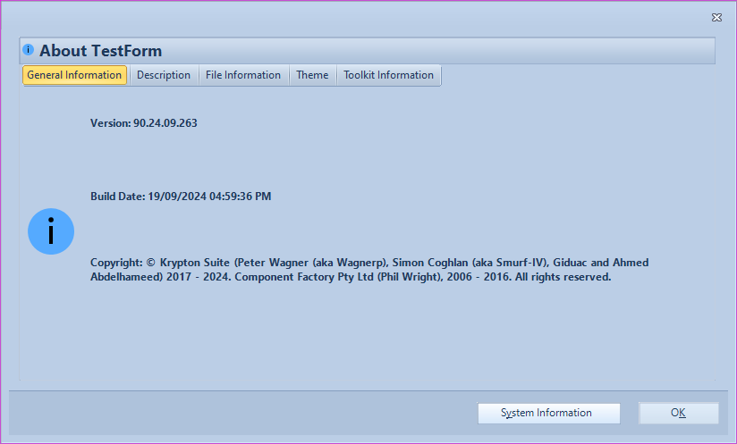
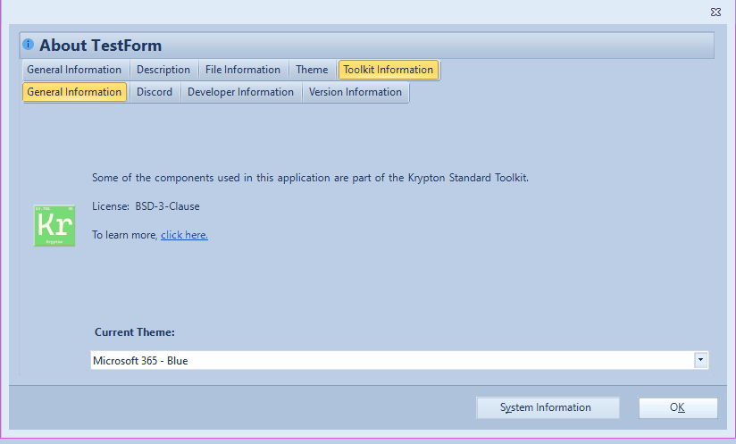

KryptonAboutBox
Assembly and namespace (V110+): KryptonAboutBox is in the Krypton.Toolkit.Utilities assembly and namespace. Earlier documentation referred to Krypton.Toolkit; update using directives when upgrading.
The KryptonAboutBox provides access to a Krypton style dialog that allows the user to view details of the running application. It is a replica of the AboutBox dialog, that is provided as part of the Microsoft.VisualBasic assembly and is typically used by VB.NET developers. By providing a Krypton version of this dialog it ensures that your whole application has a consistent look and feel that extends to even the input boxes that appear.
Appearance
The displayed KryptonAboutBox derives from the KryptonForm base class and so has the same appearance as other Krypton style forms. In order to show the KryptonAboutBox, you need to call one of the static methods it exposes called Show. You can also specify whether you want to allow the user to see the details of their system, which will launch MSInfo32, and to allow the user to see details of the Krypton Toolkit. See Figure 1 for an example of the about box in operation.

Figure 1 — A simple KryptonAboutBox

Figure 2 — The KryptonAboutBox displaying details about the toolkit